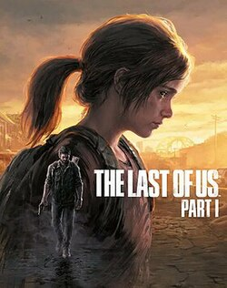
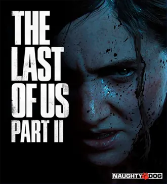
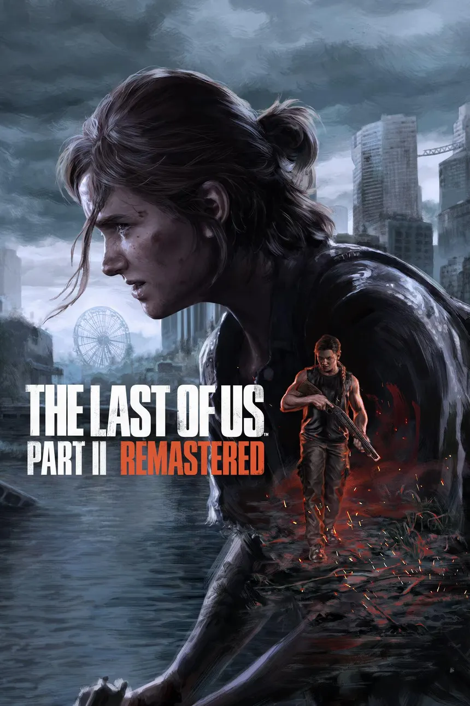

The Last of Us Part I
Uma versão reconstruída do primeiro jogo da franquia.
A história de Joel e Ellie em três edições.

Uma versão reconstruída do primeiro jogo da franquia.

A continuação da história de The Last of Us.

Versão remasterizada de Part II, com melhorias visuais e modos extras.
Part II continua a história de Part I, então comece pelo primeiro.
| Jogo | Lançamento | Plataformas |
|---|---|---|
| The Last of Us Part I | 2022 (PC em 2023) | PS5, PC |
| The Last of Us Part II | 2020 | PS4 |
| Part II Remastered | 2024 (PC em 2025) | PS5, PC |
Escolha a plataforma e procure o jogo na loja oficial.